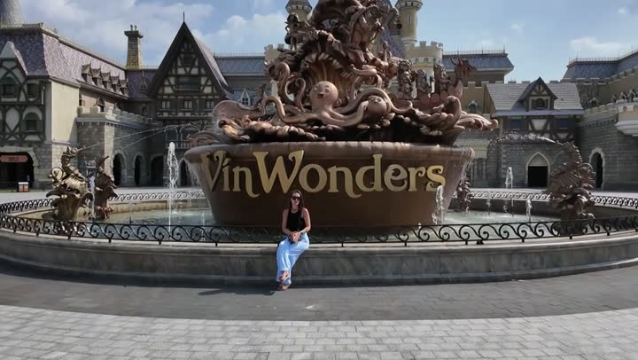
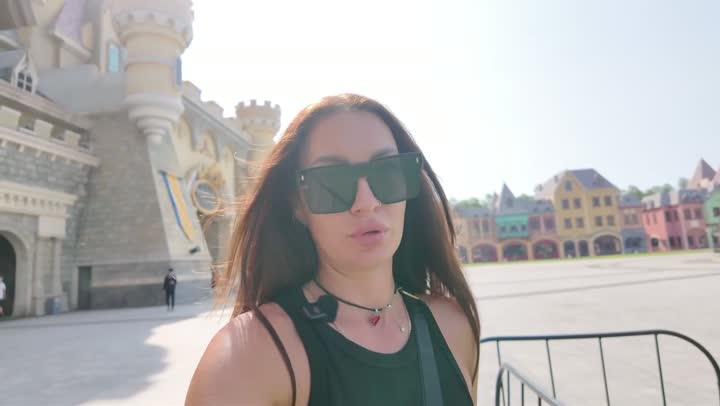
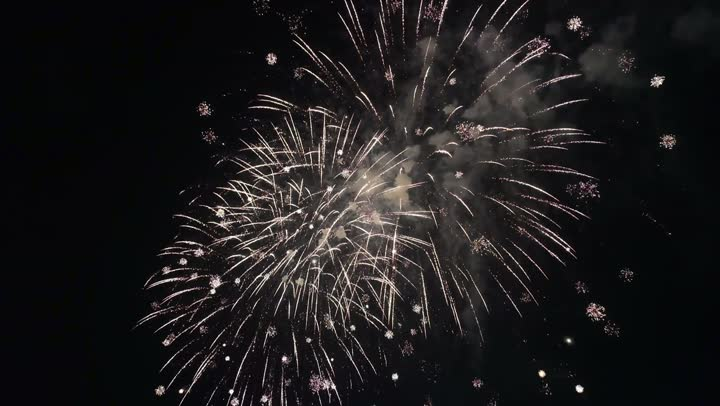
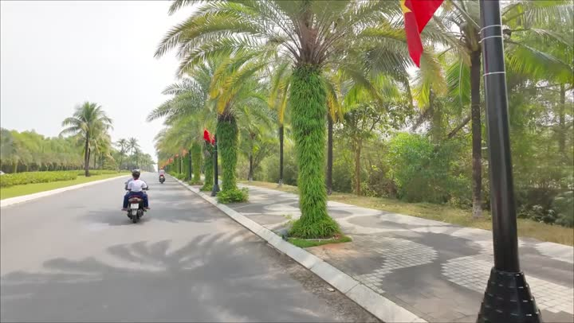
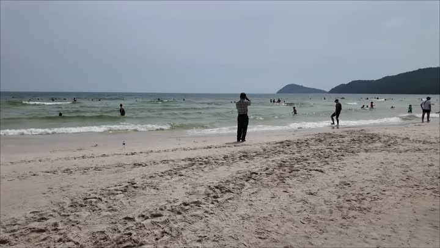

Атлас мест · ролик от 24 апреля 2026
ВЬЕТНАМ - ФУКУОК: СЛОНЫ В МОРЕ, ПЛЯЖ С САМОЛЁТАМИ, ГОНДОЛЫ И САМАЯ ДЛИННАЯ КАНАТКА
Места из этого ролика — 13
- Win Wonders — с 0:34, Фукуок ▶
- Венеция (район) — с 2:06, Фукуок ▶
- Теди кафе — с 11:23, Фукуок ▶
- Sunceset Town — с 12:56, Фукуок ▶
- Кинг кофе — с 14:57, Фукуок ▶
- Пляж Хэ — с 23:15, Фукуок ▶
- C Bech — с 24:19, Фукуок ▶
- Пляж с самолётами — с 25:21, Фукуок ▶
- Sunnyside Santa — с 28:26, Фукуок ▶
- Кафе в районе Донгдонг — с 29:59, Фукуок ▶
- Супермаркет Кинг — с 32:29, Фукуок ▶
- Самая длинная канатная дорога — с 34:01, Фукуок ▶
- Ресторан Манга — с 36:39, Фукуок ▶

Win Wondersпарк развлечений · 🤔 На любителя
Венеция (район)парк развлечений · 👍 Советуем · дорого Теди кафекафе · 👍 Советуем · дёшево
Теди кафекафе · 👍 Советуем · дёшево
Sunceset Townгорода и районы · 👍 Советуем Кинг кофекофейня и десерты · 👍 Советуем · дёшево
Кинг кофекофейня и десерты · 👍 Советуем · дёшево
Пляж Хэпляж · 🤔 На любителя
C Bechпляж · 🤔 На любителя Пляж с самолётамипляж · 👍 Советуем
Пляж с самолётамипляж · 👍 Советуем Sunnyside Santaпарк развлечений · 🤔 На любителя · средне
Sunnyside Santaпарк развлечений · 🤔 На любителя · средне Кафе в районе Донгдонгкафе · 👍 Советуем · дёшево
Кафе в районе Донгдонгкафе · 👍 Советуем · дёшево Супермаркет Кингсупермаркет · 👍 Советуем · дёшево
Супермаркет Кингсупермаркет · 👍 Советуем · дёшево Самая длинная канатная дорогаактивный отдых · 👍 Советуем · средне
Самая длинная канатная дорогаактивный отдых · 👍 Советуем · средне Ресторан Мангаресторан · 🤔 На любителя · дорого
Ресторан Мангаресторан · 🤔 На любителя · дорогоАтлас мест канала «Юля и Дима / БЕЗ ТОРМОЗОВ». Описания составлены по нашим роликам; цены — на момент съёмки. Нашли неточность — напишите нам в Telegram.